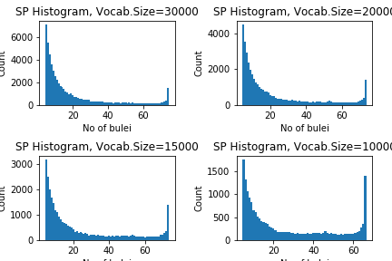
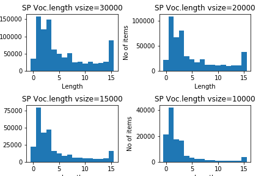
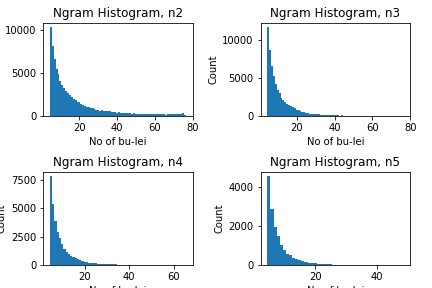

In this paper, an attempt is made to see how the traditional categories for classifying literature in China compare to an analysis of the digital text in these categories. The research is done using the Kanseki Repository as an example.
Most of the texts in the KR are not punctuated, and none of them are tokenized. To eliminate the problem of tokenization, for this research the tool sentencepiece is used. However, to test for the suitability of the tool, a comparison with ngrams is also performed.
Sentencepiece, developped by researchers at Google, Inc., uses stochastic methods to find the n most frequent adjoining character strings in a text. These adjoining strings, which are not words in any linguistic sense, are called "sentencepiece". In a training run, the tool will analyse the text and build a model of the text, including a list of the vocabulary (e.g. sentencepieces), which provides the pieces and the frequency of occurrence in the text corpus. This model can than be used to tokenize new texts into sentencepieces, the usual use case for this is building a pipeline for natural language processing. In this paper, however, the vocabulary lists will be used as a proxy for characteristics of the texts for comparison.
Apart from providing the text, the only piece of configuration needed for building the models, and the only one used here is the desired number of entries for the vocabulary list. The number of unique Kanji in the texts is usually around 11000, so the list should have more entries. In preparatory experiments, numbers ranging from 30000 to 120000 have been used, but it turned out that such large numbers are not productive, so for the run described here, only sizes of 30000 and 20000 have been used, to gauge what influence the vocabulary size might have on the outcome.
The KR is organized in 6 large categories, which each have subcategories of varying numbers, altogether there are 75 subcategories. Models have been builded separately for all categories with both vocabulary sizes. The resulting lists of 75 vocabulary lists in each run have then been consolidated into one global list of all sentencepieces in the corpus.
For each of these entries in the list, we recorded wich subcategories contained the entry. Some of the entries occur in all 75 subcategories, while most are only recorded in one. The number of co-occurrences across subcategories can be seen as an indicator of how specific or common a sentencepiece is. Figure 1 shows histograms of distributions1.

Figure 1: Number of co-occurrences of vocabulary in bulei, for different sizes of the vocabulary
Another item of interest could be the distribution of length of the vocabulary items for different values of the size. Figure 2 shows such distributions for different vocabulary sizes. It seems that the maximum value for the length is 16.

Figure 2: Length of sentencepiece items for different vocabulary sizes.
Using n-gram as alternative, here with n of 2, 3, 4 and 5. First we look at the distribution of co-occurrences, as shown in Figure 3. In this case, the number of ngrams considered has been capped at the most frequent 30000. Compared to the sentencepiece values in Figure 1, the curve is much more regular, without the long stretch of almost identical values between 35 and 70.

Figure 3: Number of co-occurrences of ngram in bulei, for different values of n.
There are many ways to combine the vocabulary lists to form a network. Here we will consider every subcategory 部類 as a node, co-occurrence of two items in the vocabulary lists of two subcategory as an edge. The weight of this edge again can be calculated in different ways. Here we consider three possibilities:
In addition to using various values of weight for the network edges, we can also limit the edges based on how many subcategories they occur in. In the terms of Figure 1 and 2, we can consider an edge only relevant if it occurs more frequent or less frequent than a tresholds. We use different upper and lower limits, to see how the relative frequency of the co-occurrence contributes to forming a meaningful network.
It is difficult to evaluate the results of these calculations. As preliminary result, we did 36 calculations for different values of vocabulary size (10000, 15000, 20000 and 30000), upper and lower limits (70/35, 30/5, 3/1) and combined this with the above mentioned score for the weight of edges. Based on the proximity, for every subcategory, we list the 10 closest subcategories. As a first approximation (and since this is relative easy calculated), we consider how many subcategories from the same category for a given subcategory. From this, we produced 18 tables that list the Self/Other score and the 10 top subcategories for each of the values. For all subcategories 部類 in a category 部, for the 10 most similar subcategories, a same/other calculation is performed, the maximal score is thus 10 times the number of the subcategories for a given category.
In addition, to get a better overview, we created summary tables for all 6 values top categories. These tables show how they perform in each calculation and allow for easier comparison.
In order to get a better evaluation of the results, we created a list with subcategories that should go together and used this to check the results.
KR1a 易類 KR3g:術數類 KR2a 正史類 KR2b:編年類,KR2d:別史類,KR2o:史評類 KR2b 編年類 KR2a:正史類, KR1i 樂類 KR1d:禮類, KR1e 春秋類 KR2o:史評類 KR2l 職官類 KR2m:政書類,KR2f:詔令奏議類, KR2m 政書類 KR2l:職官類,KR2f:詔令奏議類, KR2f 詔令奏議類 KR2l:職官類,KR2m:政書類, KR3g 術數類 KR3f:天文算法類, KR3f 天文算法類 KR3g:術數類, KR4a 楚辭類 KR1c:詩類 KR4c 別集類-唐 KR4d:別集類-宋, KR4d 別集類-宋 KR4e:別集類-明,KR4c:別集類-唐 KR4e 別集類-明 KR4d:別集類-宋,KR4f:別集類-清 KR4f 別集類-清 KR4e:別集類-明 KR6a 阿含部類 KR6b:本緣部類 KR6l 毘曇部類 KR6n:瑜伽部類 KR6m 中觀部類 KR6n:瑜伽部類 KR6q 禪宗部類 KR6r:史傳部類,KR6p:淨土宗部類
The score is based on the position in the weighted list of neighbouring subcategories, the first position gets 10 points, from this one point is deducted as position gets lower, with 10th place awarded only one point. A list of these scores is also available in the summary summary tables.
There are many ways to detect communities, that is, sub-networks with a strong mutual relation. Here we will use the louvain algorithm[1], which proved to be the best performing algorithm in [2].
Communities detected using this algorithm are also linked in the summary tables, the number given here is the number of communities for the network.
Using the same method, but with ngrams instead of vocabulary lists from sentencepiece, we did calculations for ngram networks, the results are summarized here.
[1] Blondel et.al (2008) Fast unfolding of communities in large networks
[2] Emmons et. al. (2016) Analysis of Network Clustering Algorithms and Cluster Quality Metrics at Scale
Created: 2019-06-24 Mon 18:44